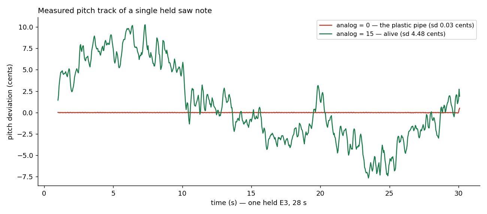
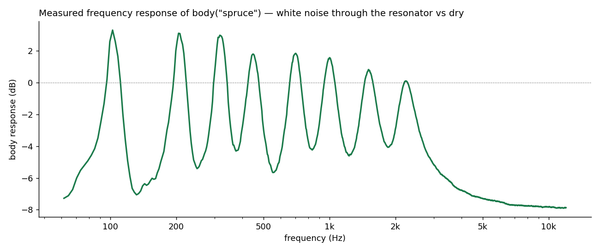

Killing the Plastic Pipe
A quarter spent hunting warmth: drift, a supersaw rebuilt, and a body that does not ring on its own.
1. The problem: perfection is the tell
By spring 2026 klang's engine was correct and fast, and it sounded like a plastic pipe, our in-house name for a specific coldness. A held note was a held note: the same waveform, the same pitch, to the last digit, for as long as you cared to sustain it. No physical oscillator does that. A real oscillator (a string, a reed, a 1970s VCO) is a physical system bathed in noise: its pitch breathes, its filters wander, no two notes are twins.
The ear is a change detector. Feed it mathematical perfection and it does not hear "pure"; it hears "dead". The whole quarter became a hunt for the right imperfection, and "right" turned out to be a statistics problem as much as a taste problem.
2. What usually gets tried
The standard remedies, each with a known failure mode:
Vibrato via LFO. Periodic, and the ear catches periodicity quickly. A sine-shaped wobble reads as an effect, applied; drift must read as a property, inherent.
Static per-note detune. Draw a random offset at note-on and hold it. Cheap, common, and wrong twice: within a note nothing moves (still dead), and across notes it reads as bad intonation rather than life. A melody where every note is differently mistuned is a badly fretted guitar, not a warm one. (We re-learned this one the hard way; see the seeding lesson below.)
Perlin-style noise modulation. Better, and widely used. But Perlin is a lattice construction: smooth by design between grid points, with statistical regularities the ear can find on long notes. The physical quantity being imitated, component noise integrated by an oscillator, has a different, well-known character: it is well approximated by filtered white noise, and there is a standard process for that.
3. The drift: two timescales of Ornstein-Uhlenbeck
Klang's answer lives in AnalogDrift.kt, and it is small enough to read in one sitting. The model: real VCO pitch
instability has (at least) two distinct characters, so the generator layers two smoothed-noise processes:
- a fast jitter, about 50 ms time constant, ±0.2 cents per unit
analog: the constant micro-wobble of a live oscillator; - a slow drift, an Ornstein-Uhlenbeck layer with a correlation time of several seconds, ±0.8 cents per unit: the lazy, breathing wander that makes a sustained note feel alive.
Both are white noise pushed through one-pole dynamics, closer to the physics of component noise than a lattice field. The step, verbatim:
fun nextMultiplier(): Double {
// xorshift32 — inline, no Random dispatch
var s = rngState
s = s xor (s shl 13)
s = s xor (s ushr 17)
s = s xor (s shl 5)
rngState = s
val x = s * ANALOG_INT_INV // uniform ≈ [-1, 1]
val newYFast = yFast + alphaFast * (x - yFast)
val newYSlow = ySlow + alphaSlow * (x - ySlow) - betaSlow * ySlow
yFast = newYFast
ySlow = newYSlow
return 1.0 + newYFast * scaleFast + newYSlow * scaleSlow
}
Three details worth the ink:
The RNG is inlined on purpose. That xorshift32 is three shifts and three xors: no Random.nextDouble() dispatch,
no allocation, no permutation tables. Total cost per step: those six bit ops plus six multiplies and seven adds, about
20 ops, zero calls. A lane steps once per 128-frame block and the oscillator ramps the multiplier across the block's
samples, one add per sample on the browser's audio thread (how it got there is
its own post); anything fancier would be paying rent it does not need to.
One noise source feeds both layers. The same uniform draw drives the fast one-pole and the slow OU update: two filters, two personalities, one stream.
The seeding is the actual lesson. The fast layer is seeded from its steady-state distribution; it settles within 50 ms, so starting it "warm" is harmless and the micro-shimmer is present from the first sample. The slow layer is seeded at center, deliberately. The first version seeded it at steady state too, and that was the static-detune failure all over again: a short note does not live long enough for a process that slow to move, so each note simply stuck at its randomly seeded offset, per-note random detune, reading as wandering intonation on every melodic line. Seeding at center means every note attacks in tune, and the drift is something that happens to notes that live long enough to earn it. The imperfection has to respect the music's clock.

Fig. 1: measured from the engine: one held E3, pitch-tracked. Drift off:
sd 0.03 cents, the plastic pipe. Drift on (analog = 15): ±9 cents of slow breathing with fast shimmer riding on it,
and note how it starts near center, in tune, before wandering.
4. The supersaw, rebuilt around the same philosophy
The same quarter rebuilt the supersaw, the JP-8000-style detuned stack whose anatomy Szabó documented [1], and every change followed the same rule: imperfection where the ear wants life, precision where it wants pitch.
- Analog flyback instead of PolyBLEP. The band-limited-step approach was dropped for a shaped flyback modeled on an analog sawtooth's reset: it softens high notes the way analog hardware does, instead of ringing the way textbook anti-aliasing does.
- The tuning anchor is a weighted centroid. With per-voice detunes and gains in play, the perceived pitch is the gain-weighted mean of the stack, so that mean is computed and subtracted, and the note's perceived pitch stays where it was written whatever the ensemble around it is doing.
- Jitter the gains, not the detunes. Randomizing per-voice amplitude gives the ensemble life without touching intonation.
- And the center voice is exempt. Full gain jitter on the voice that carries the fundamental made some notes attack weak, so the center got a scaled-down share. Precision at the center, chaos at the edges.
That last item deserves a flag: it was the first time the project noticed that the center voice of a unison stack is special, that randomness applied uniformly across an ensemble can randomly delete the one component the ear anchors on. Pulling that thread properly, two months later, led to the fundamental lottery and the phase pool. Q2 treated the symptom; Q3 found the disease.
5. The body: a resonator that does not ring on its own
The third front was resonance. Synth notes stop at the oscillator; acoustic notes pass through a body (wood, air, a
cavity) that boosts some bands and swallows others. Klang's
body() models that: a parallel bank of band-pass "modes" over a floor, with one constraint chosen on purpose.
It is passive in the way that matters: it adds nothing that was not played into it and does not self-oscillate; its
modal peaks stay within about 3 dB while the valleys and rolloff carve away far more than the peaks add.

Fig. 2: measured from the engine: white noise through body(material = "spruce")
versus dry, spectrum ratio. Eight modal peaks between 100 Hz and 2.2 kHz, none more than about 3 dB above unity, valleys
carved between them, and a high-frequency rolloff. Peaks modest, valleys deep: far more carved than added.
The passivity constraint is audible as trustworthiness: a passive body can be pushed hard without blooming or ringing
on its own, and materials (spruce, maple, mahogany, …) become characters rather than effects.
vowel() was reworked on the same chassis the same quarter.
6. What the quarter taught
The plastic pipe died of a hundred cuts: drift, flyback, jitter, body, plus by-ear tuning rounds that no changelog fully records. But the transferable lessons are three:
- Warmth is controlled imperfection, and the statistics of the imperfection matter. The ear distinguishes filtered-white from lattice noise, periodic from aperiodic, moving from stuck. Choose the process to match the physics being imitated, not just the smoothness.
- Imperfection must respect the music's clock. The seeding lesson: a slow process seeded at steady state turns short notes into random detune. When a note starts, it starts in tune; life accrues with duration.
- Precision and chaos are not opposites; they are assigned seats. Centroid-anchored tuning under jittered gains; a stable center voice inside a randomized ensemble; a passive body under a living oscillator. Deciding where each lives is the actual sound design.
References
- Szabó, A. (2010). How to Emulate the Super Saw. B.Sc. thesis. PDF